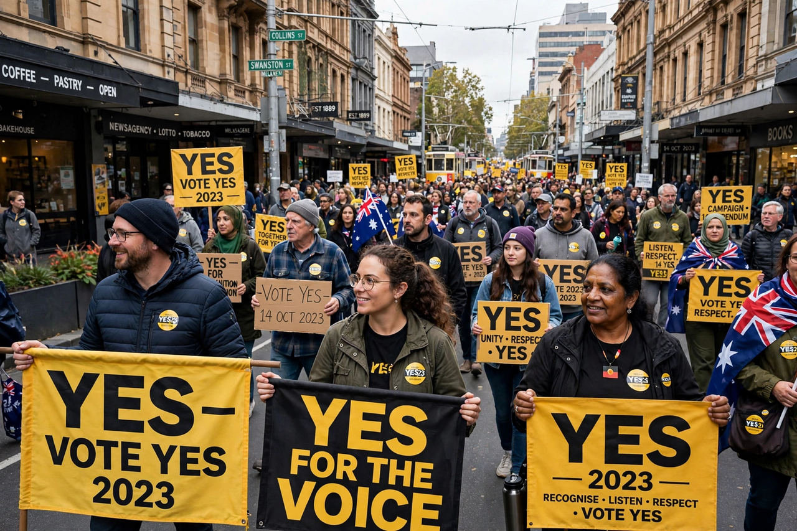

| Indigenous Voice to Parliament | |
|---|---|
 Walk for Yes rally, 2023 | |
| Proposed | Uluru Statement from the Heart (2017) |
| Referendum | 14 October 2023 |
| Result | Not carried (about 60% No nationally) |
The Indigenous Voice to Parliament was a proposed Australian federal advisory body comprising Aboriginal and Torres Strait Islander people, to be enshrined in the Constitution, which would give advice to Parliament and the executive government on matters relating to Indigenous peoples. The proposal was the first request of the Uluru Statement from the Heart (2017), issued after a national constitutional convention of Indigenous Australians at Uluru, which also called for a Makarrata Commission for treaty-making and truth-telling.
Prime Minister Anthony Albanese committed to the proposal on election night in 2022. The Constitution Alteration (Aboriginal and Torres Strait Islander Voice) 2023 was passed by Parliament, and the referendum was held on 14 October 2023 — the first referendum of the 21st century in Australia. Voters were asked whether the Constitution should be altered to recognise the First Peoples of Australia by establishing an Aboriginal and Torres Strait Islander Voice.
The "Yes" campaign was supported by the Labor government, many businesses, sporting bodies and community organisations. "No" campaigns — both the official parliamentary No case and progressive No voices, including Senator Lidia Thorpe's "Blak sovereignty" position — argued variously that the proposal was risky, divisive, insufficient, or lacking detail. Aboriginal affairs minister Linda Burney and Indigenous leaders such as Noel Pearson fronted the Yes case; opposition leader Peter Dutton opposed it.
The referendum failed in every state, with approximately 60% voting No nationally. It was the first referendum since 1977 to be held without bipartisan support. Following the result, Indigenous leaders observed a week of silence, and debate over Indigenous rights, treaty and truth-telling shifted largely to state level, including Victoria's treaty process.